From Texts to Networks
Worshop in Network Analysis
Maciej Eder
University of Tartu | Polish Academy of Sciences
06/05/2026
Introduction
Aims of the study
- Assessing large number of texts
- Leveraging existing explanatory methods
- Automatic analysis of textual relations…
- … that will reveal groups of similar texts
Mapping literature
- Chronology
- Genre
- Imitation
- Authorship
- …
Basic concepts
- “Computation into criticism” (John Burrows)
- “Distant reading” (Franco Moretti)
- “Macroanalysis” (Matthew Jockers)
- Big Data
- Authorship attribution
Cluster analysis dendrograms
- Highly dependent on feature selection
- Highly dependent on similarity measure
- Highly dependent on linkage algorithm
- No validation provided
136 most frequent words
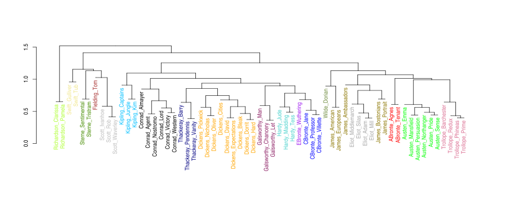
137 most frequent words
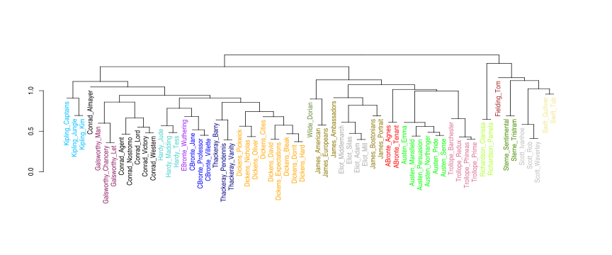
Unstable results
- Noise?
- Unreliability of the linkage procedure?
- More than one stylistic layer?
Layers
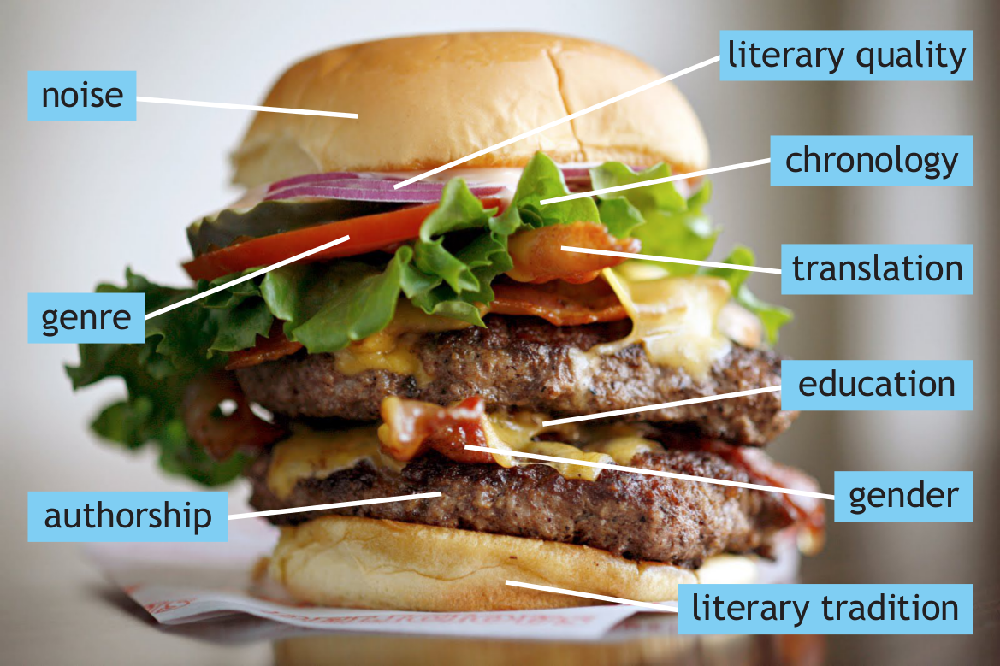
Networks to rescue
A new technique: assumptions
- Explanatory power of dendrograms
- Stable results and/or validation
- Scalability: 500 texts? 1000 texts? 31M texts?
Authorship attribution
- An anonymous text is tested against a set of “candidates”
- Goal: to find the nearest neighbor
- Effective style-marker: most frequent words (grammatical words)
Establishing a distance

Another distance…
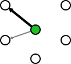
Checking each sample
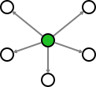
Deciding which distance is shortest
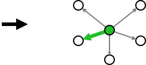
From attribution to stylometry
- If it works with anonymous texts, …
- … what about extending the same procedure?
- What about applying it to all texts?
Distances to txt1
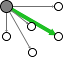
Distances to txt2
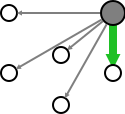
Distances to txt3
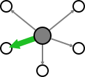
A resulting network
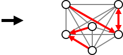
From stylometry to networks
- Nearest neighbors can be represented as connected nodes of a network.
- A variety of layout algorithms can be applied.
Example
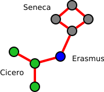
Reliability, stupid!
- Instead of one analysis (e.g. 100 MFWs)…
- … a whole range (100, 200, 300 MFW, etc.).
- Next, particular “snapshots” summarized.
100 MFWs
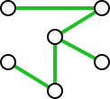
200 MFWs
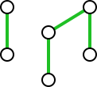
300 MFWs
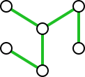
Consensus network
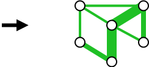
Importance of runners-up
- Nearest neighbors = the most similar
- Runners-up: do they really deserve to be filtered out?
- Solution: more connections!
3 neighbors to txt1
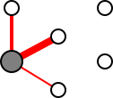
3 neighbors to txt2
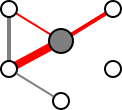
3 neighbors to txt3
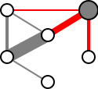
A resulting network
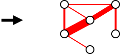
Two algorithms togegher
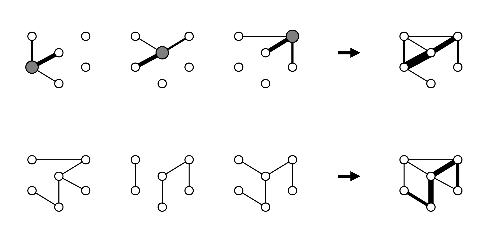
Latin literature at a glance
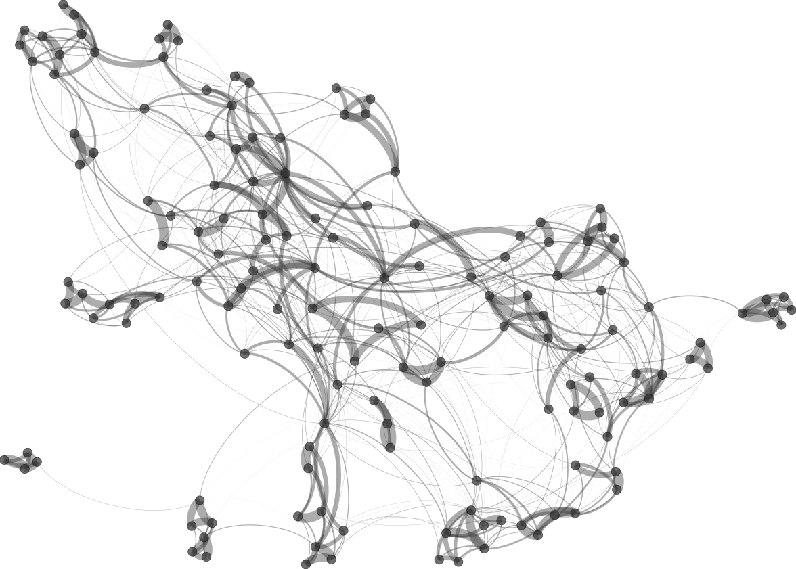
Traces of chronology?
- “Ciceronianus es, non Christianus!” (God accusing St Jerome)
- “Renovatio antiquitatis” (Renaissance humanists)
- hypothesis: noticeable traces of chronology
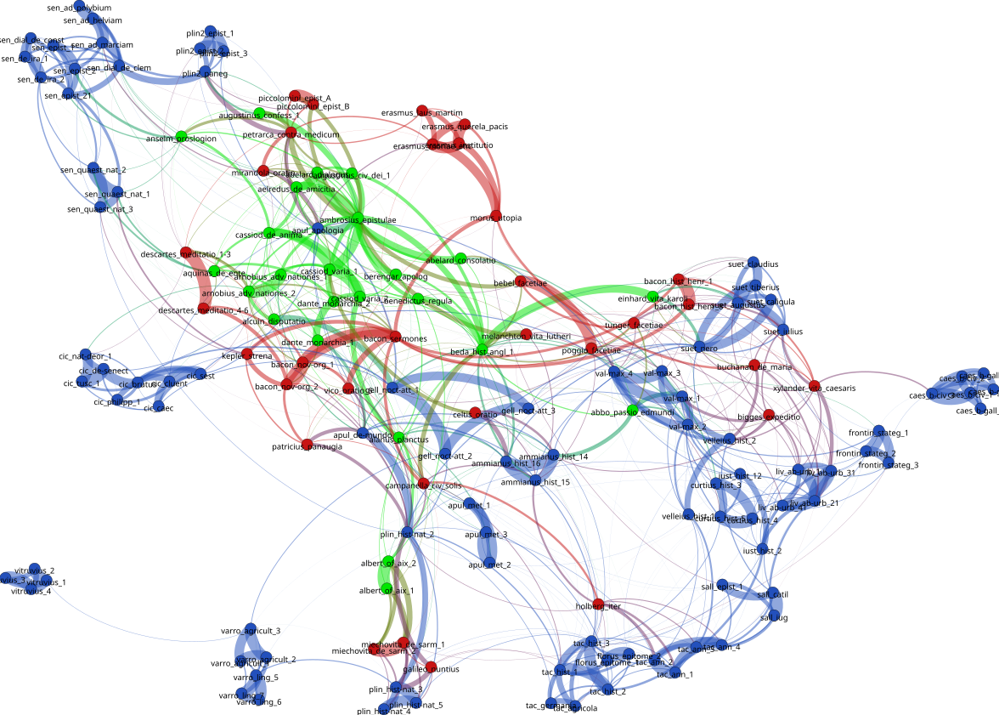
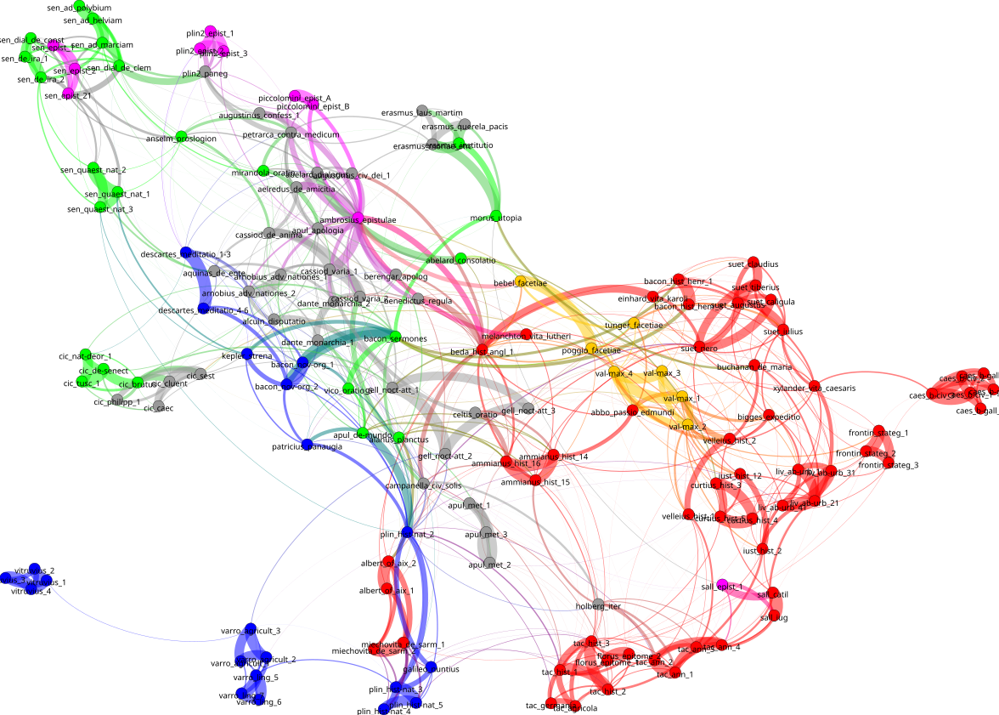
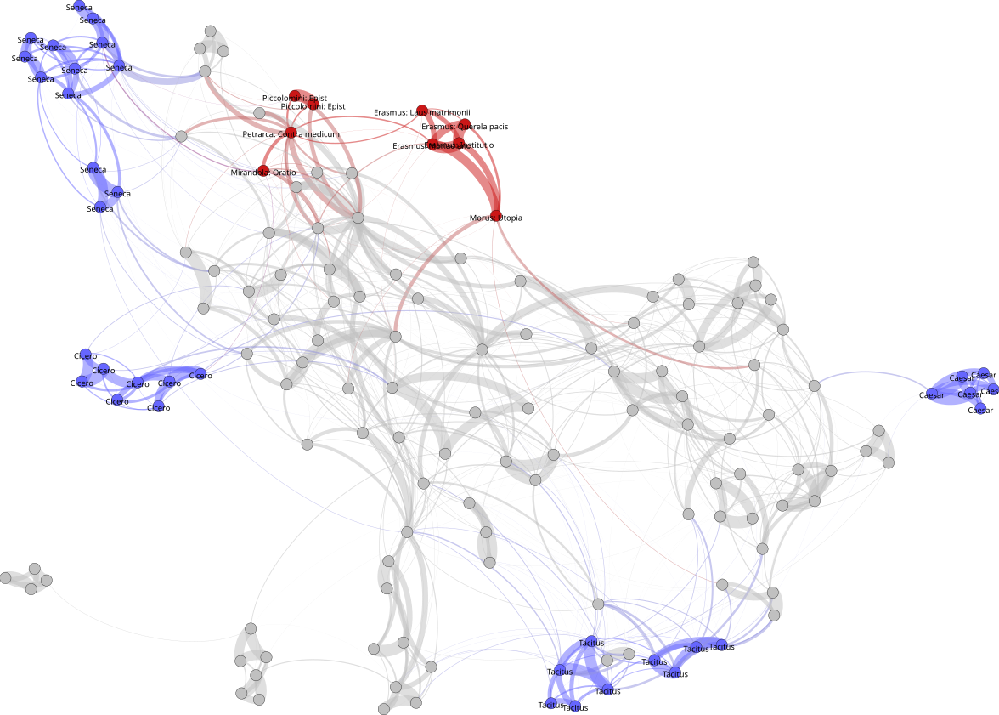
How influential was Cicero?
- Ciceronian Quarrel: the single most important debate of the Renaissance.
- Imitation of the admirable Ciceronian style.
- hypothesis: visible traces of Cicero in early modern Latin writings.
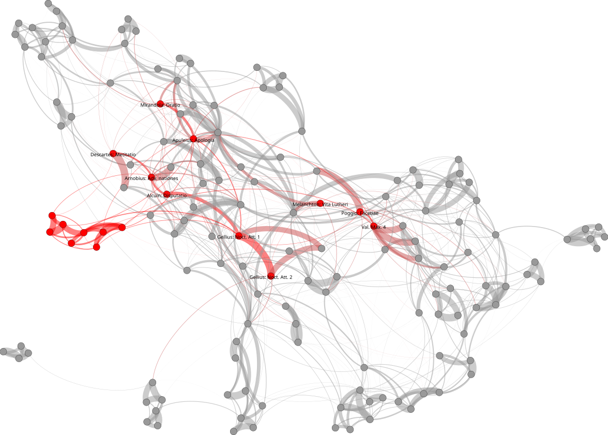
Conclusions
- No clear chronological pattern.
- Genre signal: predominant.
- Masters of style tend to keep outside the network.
Further research
- More texts!
- More genres!
- More “Attic” writers (e.g. Lipsius).